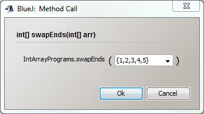

Int Array Programs
Create a single class named IntArrayPrograms. Each of the following methods will be a static method within the IntArrayProgramsTester class. Use the IntArrayProgramsTester to make sure that your programs work for several different parameters.
If you feel like testing your method manually through
BlueJ, you can declare array parameters simliar to the example below:

end9 - This method will take in two int[]'s as parameters and return the number of arrays that have 9 as their last element
For Example: parameters of [1,2,3,4] and [1,3,5,7,9] will return a 1
swapEnds - This method will take in an int[] as a parameter and return an array that is the same as the parameter but with the first and last elements switched
For Example: a parameter of [1,2,3,4] will return [4,2,3,1]
addA9 - This method will take in an int[] as a parameter and return a new int[] which has one more index than the parameter. Fill the new array with every element of the parameter's array, and also put a 9 in the last index before you return it.
For Example: a parameter of [1,2,3,4] will return [1,2,3,4,9]
containsAPrime –
this method will take in an int[] as a parameter and return true if there is at
least one prime number.
You may copy your primeChecker method from the
ForLoopsPrograms assignment to this class if you would like to use it.
For Example: a parameter of [4,8,7,9] will return true
biggestDifference – This method will
take in an int[] and return a positive int that is the largest difference
between two consecutive elements
For Example: [2,5,10,3,6] will
return a 7.
Use Math.abs to make your differences positive.
post4 – This method will take in an
int[] as a parameter and return an int[] that is composed of all the numbers
that come after the LAST 4 in the array.